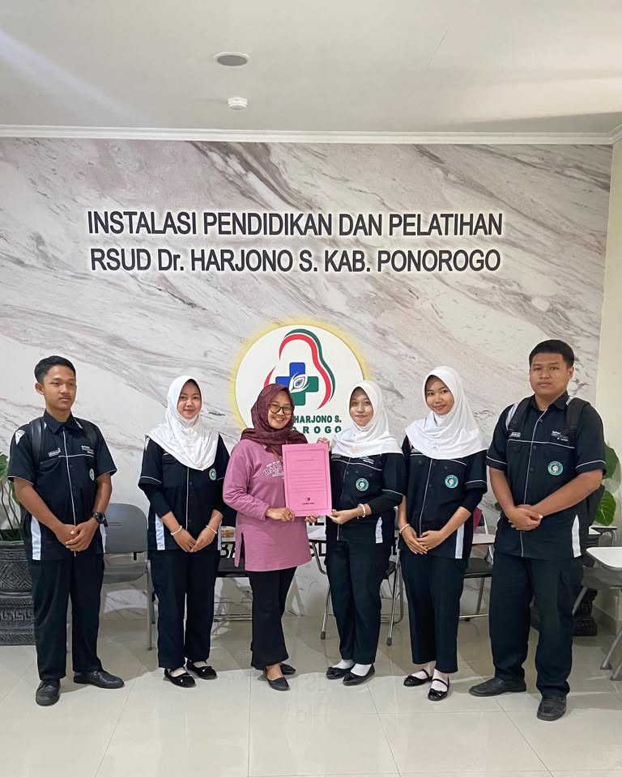

Praktik Kerja Lapangan

Praktik Kerja Lapangan (PKL) saya di RSUD berlangsung selama kurang lebih lima bulan, dari tanggal 6 April hingga 11 September 2025. Ini adalah pengalaman pertama saya merasakan dunia kerja sesungguhnya — dan salah satu momen paling membentuk karakter saya sebagai calon Web Developer.
Awal Mula
Berawal dari rasa penasaran tentang bagaimana teknologi informasi diterapkan di dunia kerja nyata, saya memilih RSUD sebagai tempat PKL. Saya penasaran bagaimana sistem informasi rumah sakit bekerja, bagaimana data pegawai dikelola, dan bagaimana teknologi membantu operasional pelayanan kesehatan.
Selama PKL, saya ditempatkan di bagian Teknologi Informasi — tepat di mana saya bisa belajar banyak hal teknis sekaligus memahami budaya kerja profesional.
Project yang Saya Kerjakan
Selama lima bulan di RSUD, saya terlibat dalam dua project utama yang sangat mengasah kemampuan saya:
🛠️ Project 1: Sistem Helpdesk
Di awal PKL, saya ditugaskan untuk membangun sistem helpdesk — aplikasi yang digunakan untuk menerima dan mengelola laporan kendala teknis dari berbagai bagian di rumah sakit. Di sini saya belajar bagaimana membuat sistem yang benar-benar dipakai oleh banyak orang, bukan sekadar tugas sekolah.
💼 Project 2: SICAKEP (Sistem Informasi Catat Kepegawaian)
Project kedua sekaligus yang paling besar adalah SICAKEP — Sistem Informasi Catat Kepegawaian. Aplikasi ini dibuat untuk mengelola data dan arsip pegawai rumah sakit, mulai dari data pribadi, riwayat jabatan, hingga dokumentasi kepegawaian. Saya membangunnya menggunakan React dan teknologi web modern.
Kegiatan Rutin Selama PKL
Bukan cuma coding, selama PKL saya juga mengikuti berbagai kegiatan rutin yang membentuk kedisiplinan dan kekeluargaan:
- Apel Pagi Setiap Senin — Mengikuti apel pagi rutin bersama seluruh pegawai rumah sakit. Momen ini mengajarkan saya disiplin waktu dan rasa tanggung jawab sebagai bagian dari tim.
- Pengajian Rabu Rutin — Mengikuti kegiatan pengajian setiap hari Rabu yang menjadi agenda spiritual rumah sakit. Ini mengajarkan saya pentingnya keseimbangan antara kerja dan nilai-nilai spiritual.
- Rapat dengan Bagian SDM — Terlibat dalam rapat bersama SDM (Sumber Daya Manusia) untuk perencanaan project lebih lanjut. Di sini saya belajar mendengar kebutuhan pengguna, menuangkannya ke dalam fitur, dan mempresentasikan progres.
- Koordinasi Tim IT — Berdiskusi dengan tim IT rumah sakit tentang kendala teknis dan pengembangan sistem yang sedang berjalan.
Dokumentasi

Pelajaran Berharga
Ada banyak hal yang saya pelajari selama PKL, tapi tiga di antaranya yang paling berkesan:
💡 Pelajaran 1: Disiplin dan Tanggung Jawab
Di dunia kerja, disiplin itu nomor satu. Datang tepat waktu — apalagi kalau ada apel pagi — menyelesaikan tugas sesuai deadline, dan bertanggung jawab atas pekerjaan yang diberikan. Ini yang membedakan profesional dengan amatir.
💡 Pelajaran 2: Komunikasi dengan Pengguna
Saat rapat dengan bagian SDM, saya belajar bahwa sistem yang baik itu bukan yang paling canggih, tapi yang sesuai kebutuhan pengguna. Mendengar dulu, baru membangun.
💡 Pelajaran 3: Belajar dari Kesalahan
Saya pernah membuat kesalahan kecil saat mengerjakan sistem helpdesk. Tapi dari situ saya belajar untuk lebih teliti, selalu testing, dan tidak takut bertanya ketika bingung.
Kesimpulan
PKL di RSUD dari 6 April sampai 11 September 2025 bukan hanya tentang menambah pengalaman teknis, tapi juga tentang membentuk karakter. Saya jadi lebih disiplin, lebih bertanggung jawab, dan lebih menghargai pentingnya teknologi dalam membantu pekerjaan manusia.
Dua project yang saya kerjakan — Sistem Helpdesk dan SICAKEP — menjadi bukti nyata bahwa saya bisa membangun aplikasi yang benar-benar dipakai. Pengalaman ini menguatkan tekad saya untuk terus belajar di bidang web development dan berkontribusi lebih banyak lagi di dunia teknologi.